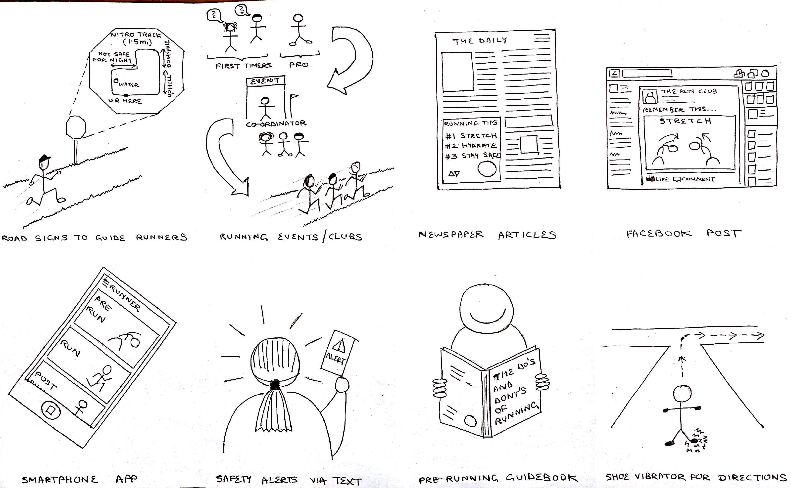
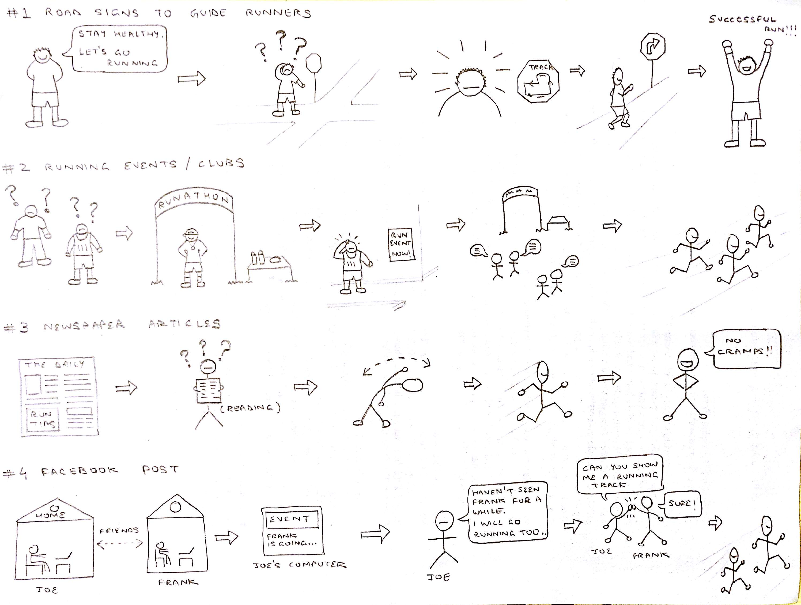
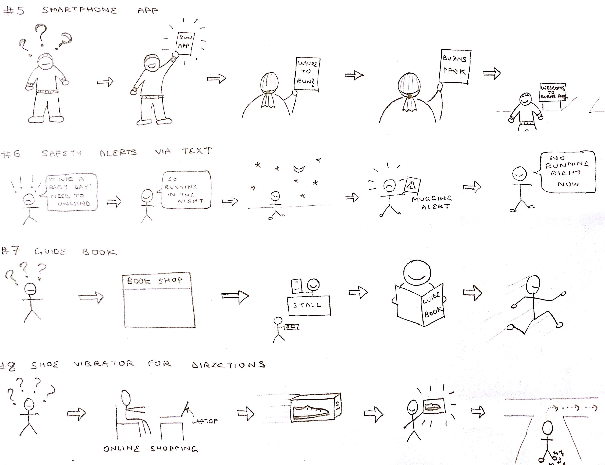
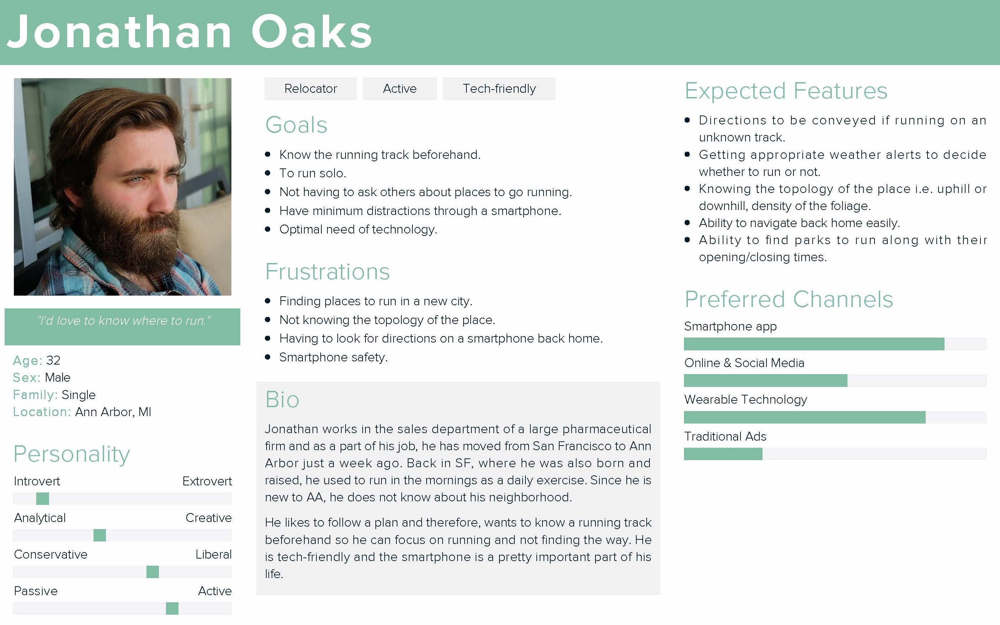
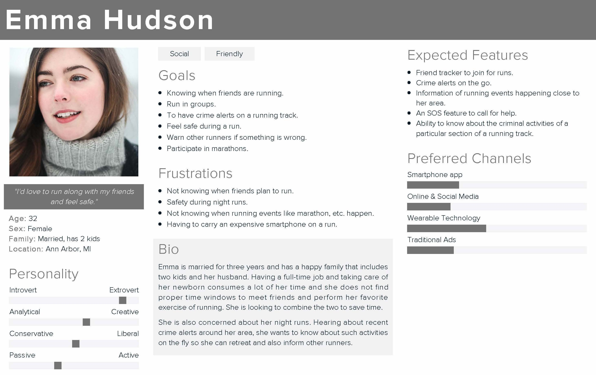
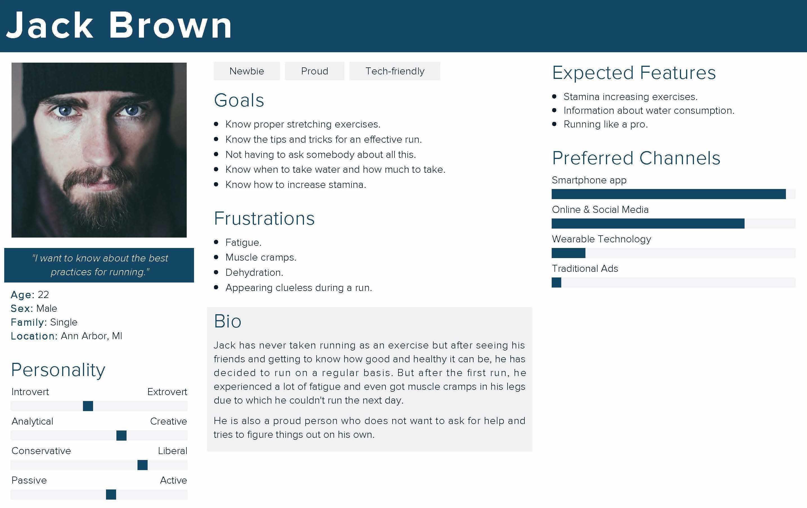
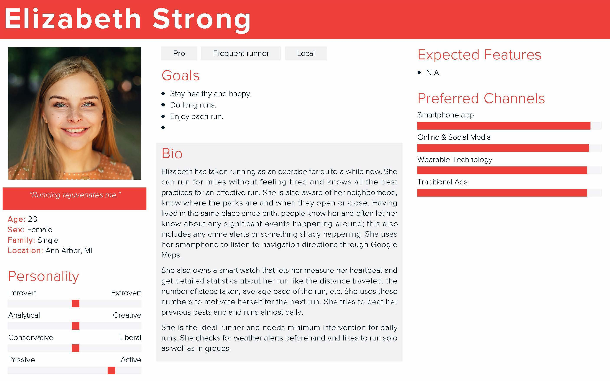
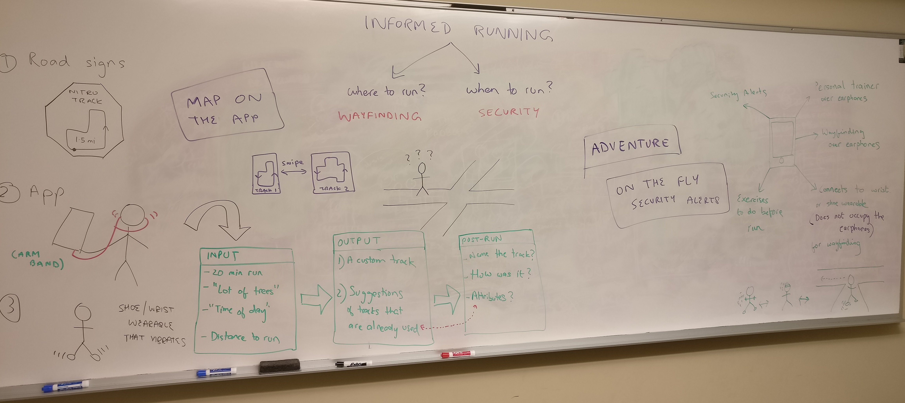

UX Researcher. Designer. Creator.
readmode
UX researcher and interaction designer
Part of my MSI curriculum, this project was my first formal introduction to UX. We were asked to find a problem and try to fix it by employing various UX practices (as depicted in 'The Process'). Run Finder is a crowd-sourced smartphone app that lists down running tracks which a user can analyze against attributes like average time taken, topography of the track (uphill or downhill) and run knowing what to expect.
To make running an informed experience for novice runners.
There are numerous people around the globe who take up running as an activity to remain fit and healthy. It’s majorly a solo exercise because of varying personal preferences and one can do it anytime and almost anywhere. But then there are beginners and people who relocate; they constitute the community that I targeted. A person who has just begun or relocated is all on their own without any proper guidance and motivation. They require relevant information such as the best as well as safe places to run, running plans to follow, proper gear to buy, etc.
The inner sound of the developer side of mine resounded "An app!" and I immediately started thinking of features of the app. But during the course of this project, I learned that technical intervention might not always be the correct solution. So I started researching. Even though the end product was an app, I came up with other ways to curb this problem.
Running is a pretty popular exercise, needless to say there were a good number of competitive apps on the market. I analyzed some of them and devised a buglist which is as follows:
I found sketching as a very flexible way to start thinking about solutions. I came up with eight possible approaches of solving this problem. I used this sketch in my user interviews to observe each interviewee's reaction to these solutions.
Fig. 1 - Sketch of eight possible solutions
 Fig. 2 - Storyboarding for possible solutions
As I was trying to evaluate which solution was best suited, I devised three personas and even one anti-persona.
  Fig. 3 - Personas
Fig. 4 - Anti-persona
Next, I found five users from my target audience and interviewed them. Below are snippets from my interviews.
Ques.) According to you, how valuable is it to prepare for a run?
Responses:
“Oh yeah! You can’t just make up your mind and go running, you have to set a target, you have to stretch, you have to take care of the water intake... Miss one thing and you won’t last long out there... Hahaha (laughs)...”
“I think it is super-valuable! Last time, I went for a run and had to return home walking because I got exhausted too soon... A friend of mine later asked me if I ran too fast in the beginning which I did. She also told me to go slow in the starting few runs to build up my stamina.”
“Believe me, it is!”
Ques.) What do you think about knowing where to run?
Responses:
“Having a predetermined track would certainly reduce the load off of my mind. I mean, I won’t have to decide where to go next.”
“I like exploring so not knowing where to run is not much of a big deal to me.”
“Yeah! Definitely. I can then go there whenever I feel like running and even do two or more circuits if I feel motivated enough.”
“I know my way around here. Unless I get bored with running in the same track, I don’t think it will be usable to me.”
Ques.) What are your views on safety for running alone? Not just in Ann Arbor but other places too.
Responses:
“I am absolutely concerned about safety. Especially during nights... Once, I was using Google Maps for getting back home and it took me through a very secluded area which didn’t even had a proper road. There were these overgrown trees... It was really scary.”
“It (safety) is important because you never know what’s gonna happen. But in my case, not so much because I always run in a park (Burns Park) close to my home and during peak times when it is usually crowded.”
Then I showed them the sketches of the eight ideas I had drawn earlier on paper and observed their reactions. I answered their questions that they had regarding the sketches but didn’t give any specifics.
Then I picked up the "favorite" solutions and pitted them against each other. I decided at this time that an app can reach more audience and it can be sustainable too. I brainstormed on it's features.
Fig. 5 - Brainstorm session outcome
Finally, I made a lo-fi prototype and tested it on one of the users of my target audience. The paper prototype proved very helpful as it could be made quickly, discarded easily and changed according to the feedback. Below is the video of me demonstrating the lo-fi prototype.
As of now (Nov 2016), I am still working on my hi-fi prototype using Axure RP. I will be uploading it in mid-December.
Not only I learned what to do, I also learned what not to do. I learned a lot of good UX practices. I got to know that user is an important stakeholder. Usability testing is important. I learned to break a problem into small set of questions that can be easily answered.
Other projects - merainstitute.com, homearte.in, BadgerJS and Lusie